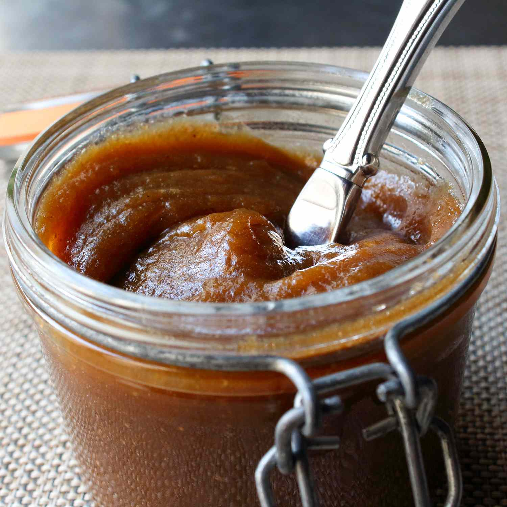

Apple Butter

Move over, apple sauce. Apple butter is basically a spreadable apple pie filling, only better. Though cooking time is long, it's super easy and pretty hands-free. Pair it with some sharp Cheddar on a cheese plate, or slather it onto cheesy biscuits (see footnote). Other approved uses include spreading between the layers of a spice cake, filling seasonably appropriate thumbprint cookies, or even as a condiment for pork chops.
ingredients
- 5 pounds Granny Smith apples, cored and cut into 1-inch pieces
- 1 ½ cups white sugar
- ½ cup brown sugar
- 1 teaspoon salt
- 2 teaspoons ground cinnamon
- ⅛ teaspoon freshly grated nutmeg
- ½ teaspoon ground allspice
- ¼ cup apple cider vinegar
- 1 splash water
Steps
- Place apple pieces into a large slow cooker. Add white sugar, brown sugar, salt, cinnamon, nutmeg, allspice, and vinegar. Add a splash of water and mix well
- Cover and cook on High until apples are starting to soften and release liquid, 1 to 2 hours. Reduce heat to Low and cook, uncovered, until all the apple flesh is dissolved, 5 to 6 hours. Stir occasionally
- Puree using an immersion blender until smooth. Continue cooking, stirring occasionally, until darkened and thick, about 4 hours more. Pass apple butter through a strainer if desired. Seal in a glass container and refrigerate until cool